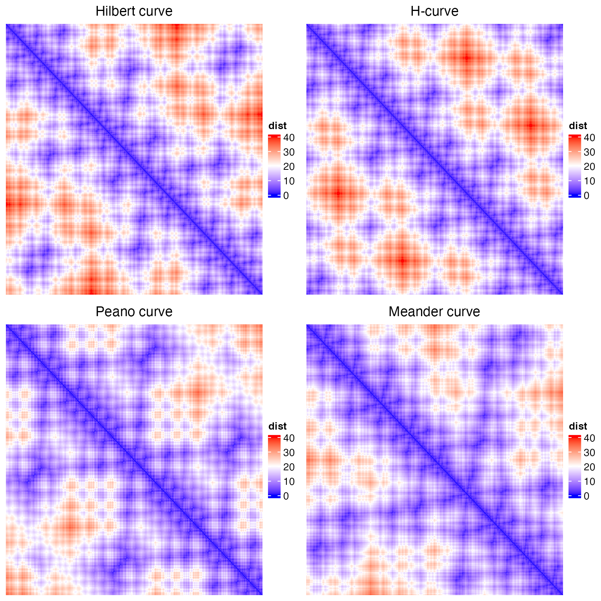
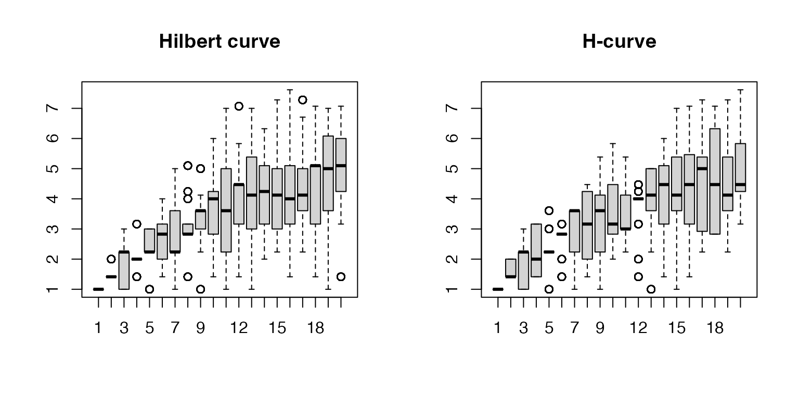
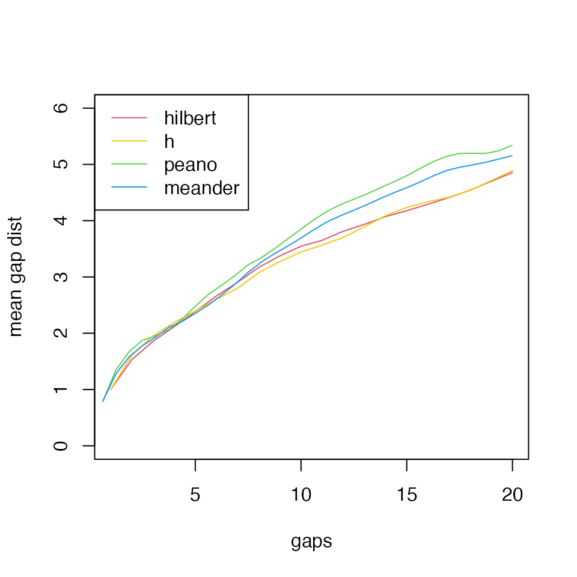

Locality of various curves
Zuguang Gu (z.gu@dkfz.de)
2024-09-05
Source:vignettes/locality.Rmd
locality.RmdFor the Hilbert curve, we calculate the Euclidean distances of its points in the 2D space. The distance matrix is visualized as a heatmap where rows and columns correspond to the ordered points on the curve.
p = hilbert_curve(level = 5)
library(ComplexHeatmap)
library(colorRamp2)
d_hc_2D = dist(p)
col_fun = colorRamp2(c(0, 20, 40), c("blue", "white", "red"))
ht1 = Heatmap(as.matrix(d_hc_2D), name = "dist",
col = col_fun, column_title = "Hilbert curve",
cluster_rows = FALSE, cluster_columns = FALSE,
show_row_names = FALSE, show_column_names = FALSE)Similar for the H-curve, the Peano curve and the Meander curve.
p = h_curve(iteration = 3)
d_h_2D = dist(p)
ht2 = Heatmap(as.matrix(d_h_2D), name = "dist",
col = col_fun, column_title = "H-curve",
cluster_rows = FALSE, cluster_columns = FALSE,
show_row_names = FALSE, show_column_names = FALSE)
p = peano_curve(level = 3)
d_pe_2D = dist(p)
ht3 = Heatmap(as.matrix(d_pe_2D), name = "dist",
col = col_fun, column_title = "Peano curve",
cluster_rows = FALSE, cluster_columns = FALSE,
show_row_names = FALSE, show_column_names = FALSE)
p = meander_curve(level = 3)
d_me_2D = dist(p)
ht4 = Heatmap(as.matrix(d_me_2D), name = "dist",
col = col_fun, column_title = "Meander curve",
cluster_rows = FALSE, cluster_columns = FALSE,
show_row_names = FALSE, show_column_names = FALSE)
plot1 = grid.grabExpr(draw(ht1))
plot2 = grid.grabExpr(draw(ht2))
plot3 = grid.grabExpr(draw(ht3))
plot4 = grid.grabExpr(draw(ht4))
pushViewport(viewport(x = 0, y = 0.5, width = 0.5, height = 0.5, just = c("left", "bottom")))
grid.draw(plot1)
popViewport()
pushViewport(viewport(x = 0.5, y = 0.5, width = 0.5, height = 0.5, just = c("left", "bottom")))
grid.draw(plot2)
popViewport()
pushViewport(viewport(x = 0, y = 0, width = 0.5, height = 0.5, just = c("left", "bottom")))
grid.draw(plot3)
popViewport()
pushViewport(viewport(x = 0.5, y = 0, width = 0.5, height = 0.5, just = c("left", "bottom")))
grid.draw(plot4)
popViewport()
It seems all the four curves keep the locality very well, that in the diagonals, the distance are quite small.
For a curve represented as a list of \(n\) sequential points denoted as \((p_i)_n\), we calculate the distance in the 2D space for points \(p_i\) and \(p_{i+k}\) where \(k \ge 1\):
\[ d_\mathrm{2D}(p_i, p_{i+k}) \]
We name \(k\) as the gap of two points.
gap_dist = function(p, gap = 1) {
n = nrow(p)
loc1 = p[seq(1, n-gap), , drop = FALSE]
loc2 = p[seq(1+gap, n), , drop = FALSE]
sqrt( (loc1[, 1] - loc2[, 1])^2 + (loc1[, 2] - loc2[, 2])^2 )
}
par(mfrow = c(1, 2))
p = hilbert_curve(level = 6)
boxplot(lapply(1:20, function(i) gap_dist(p, i)), main = "Hilbert curve")
p = h_curve(iteration = 4)
boxplot(lapply(1:20, function(i) gap_dist(p, i)), main = "H-curve")Similarly, we calculate such “gap distance” for the Peano curve and the Meander curve. Because the numbers of points on the two curves are different from the Hilbert curve, we rescale the size of the Peano curve and the Meander curve by their lengths.
r = 9^4/4^6
par(mfrow = c(1, 2))
p = peano_curve(level = 4)
boxplot(lapply(1:20, function(i) gap_dist(p, i)/sqrt(r)), main = "Peano curve", names = round(1:20 /r, 1))
p = meander_curve(level = 4)
boxplot(lapply(1:20, function(i) gap_dist(p, i)/sqrt(r)), main = "Meander curve", names = round(1:20 /r, 1))
Last, we take the mean values from boxes and directly compare the corresponding gap distances.
plot(NULL, xlim = c(1, 20), ylim = c(0, 6), xlab = "gaps", ylab = "mean gap dist")
p = hilbert_curve(level = 6)
lines(1:20, sapply(1:20, function(i) mean(gap_dist(p, i))), col = 2)
p = h_curve(iteration = 4)
lines(1:20, sapply(1:20, function(i) mean(gap_dist(p, i))), col = 7)
p = peano_curve(level = 4)
r = 9^4/4^6
lines(1:32 /r, sapply(1:32, function(i) mean(gap_dist(p, i)/sqrt(r))), col = 3)
p = meander_curve(level = 4)
lines(1:32 /r, sapply(1:32, function(i) mean(gap_dist(p, i)/sqrt(r))), col = 4)
legend("topleft", legend = c("hilbert", "h", "peano", "meander"), lty = 1, col = c(2, 7, 3, 4))
We can see, the Hilbert curve and the H-curve have the best locality. The 3x3 curve performs worse than the 2x2 curves and the Peano curve performs the worst in the four curves.